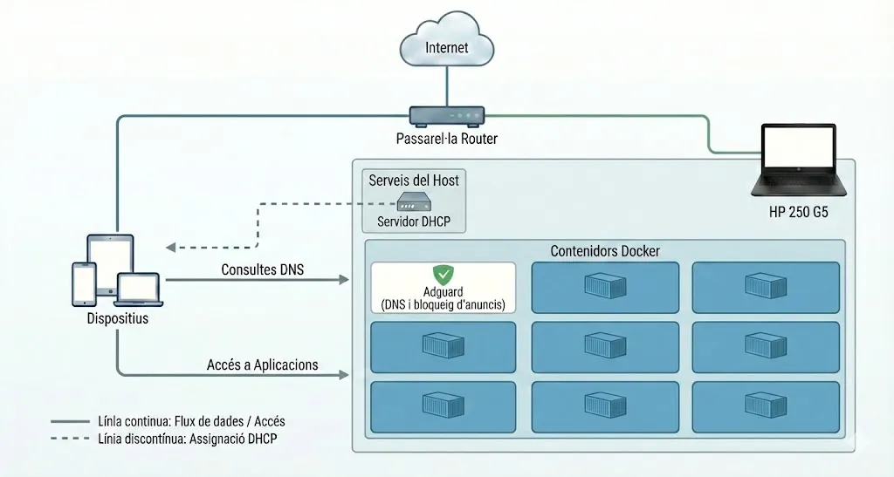

Oriol Àvila Grijalva
Configuració de l'HP 250 G5
La meva experiència al donar-li una segona vida a un portàtil com a servidor.
En aquest article vull compartir l'experiència i els motius que m'han portat a transformar un portàtil sense cap utilitat prèvia a ser el meu propi servidor, així com els seus avantatges i inconvenients que m'ha portat aquesta decisió.
Com molts de nosaltres que fem servir serveis al núvol com el correu electrònic, l'emmagatzematge de fitxers, les fotos, etcètera, vaig començar a buscar maneres de reduir la meva dependència de Google. En particular, em preocupava que si Google algun dia decidís tancar o canviar els seus termes de servei, perdés l'accés a les meves dades. Tanmateix, el meu desig d'estar menys dependent no es limitava només a Google, sinó també a altres serveis de tercers.
Avui puc dir amb orgull que he «des-googlitzat» la meva vida digital. Allotjo el meu propi servidor de calendari i diari, a més de gestionar els meus documents, fotos, vídeos i altres serveis.
Sóc (relativament) el propietari de la meva informació personal i, tot i que podria haver optat per un servidor autoallotjat per al meu correu electrònic, vaig triar seguir utilitzant els serveis de Google per comoditat més que per cap altra cosa.
En un futur m'agradaria tindre automatitzada les còpies de seguretat de les dades en comptes d'anar fent còpies esporàdiques seguint la norma 3-2-1 (3 còpies en 2 sistemes diferents i 1 d'ells fora del meu abast).
1. Elecció del servidor
El cost de muntar un servidor domèstic depèn del tipus de servidor que muntis i dels serveis que vulguis instal·lar. En el meu cas, vaig muntar un servidor en un portàtil que tenia la bateria i un parell de tecles trencades, així que el meu cost d'adquisició és zero. També és important tenir en compte no només el cost del maquinari, sinó també el consum elèctric del servidor (el portàtil consumeix entre 8W i 15W -sense tindre en compte el consum dels discs durs adicionals-).
Si ho mires des de la perspectiva que en autoallotjar certs serveis pots estalviar en quotes de subscripció com les de Google Drive o OneDrive, la inversió comença a tenir sentit.
El portàtil trencat del qual us parlava és un HP 250 G5 de 2017 amb el processador i3-5005U i 8GB DDR3L de RAM.
2. Instal·lació i configuració del sistema operatiu
M'he decantat per Debian bàsicament perquè m'agrada la seva filosofia i fa anys que utilitzo la seva branca testing com a ordinador personal. Prefereix-ho estalviar-me el procés d'instal·lació del sistema operatiu, però bàsicament és crear un USB bootable amb l'ISO de Debian, utilitzar tot el disc dur pel sistema sense complicacions de particions, seleccionar l'opció del servidor SSH perquè s'instal·li i l'entorn gràfic que vulguem (tot i que posteriorment el desactivarem).
2.1. Treballar amb la tapa tancada
Com no volem que l'ordinador s'apagui quan tanquem la tapa hem d'editar la configuració de logind:
sudo nano /etc/systemd/logind.conf
En aquesta busquem la línia que diu #HandleLidSwitch=suspend i traiem # i canviem el suspend per ignore. Un cop fet, guardem (Ctrl+O) i sortim (Ctrl+X).
2.2. Treballar amb la pantalla apagada
Per maximitzar l'estalvi d'electricitat desactivarem la pantalla al cap de pocs segons que el sistema s'inici. Per fer-ho editem el GRUB amb:
sudo nano /etc/default/grub
Seguidament, busquem la línia GRUB_CMDLINE_LINUX_DEFAULT i li afegim consoleblank=30 perquè s'apagui al cap de 30 segons. Quedant la configuració del GRUB tal que així:
GRUB_CMDLINE_LINUX_DEFAULT="quiet consoleblank=30"
Guardem (Ctrl+O) i sortim (Ctrl+X). Per actualitzar el GRUB fem sudo update-grub i reiniciem l'ordinador (sudo reboot).
3. Connexió SSH amb el servidor
Un cop tenim el portàtil configurat és hora de connectar-se mitjançant un ordinador per poder portar a terme les tasques més fàcilment, però si deixem que el rúter assigni al portàtil una IP aleatòria cada cop que aquest és reinici, un dia ens modificaran la IP i ens serà impossible accedir als nostres serveis.
Abans d'escriure res, hem de saber com Debian anomena el nostre cable de xarxa. Executem això a la terminal:
ip -c link show
Veurem una llista:
- Ignorem
lo(Loopback). - Ignorem els que diuen
docker0,br-xxxxovethxxxx(són de Docker si ja l'hem instal·lat). - El nostre cable de xarxa tindrà un nom estrany com ara
enp3s0,eth0,eno1owlp2s0(si és Wi-Fi).
Apuntem aquest últim nom i modificarem l'arxiu que s'encarrega d'administrar les xarxes: sudo nmtui. Veurem una eina gràfica a la terminal i utilitzant les fletxes del teclat:
- Seleccionem "Edita una connexió" i premem Retorn.
- Seleccionem la nostra connexió per cable (normalment anomenada "Connexió amb cable 1" o el nom de la vostra targeta
enp...). Premem Retorn. - Ens desplacem cap avall fins a Configuració d'IPv4.
- Canviem
<Automatic>per a. - Fem clic a
per mostrar les opcions. - Adreces: Introduïm
192.168.0.19/24(el/24és important, us estalvia haver d'introduir la màscara). - Porta d'enllaç:
192.168.0.1 - Servidors DNS:
1.1.1.1 - Ens desplacem fins a la part inferior i seleccionem
.
- Adreces: Introduïm
- Tanquem el men√∫ (
<Back>-><Exit>).
Ara que l'hem configurat, reiniciem la connexió de manera segura:
sudo nmcli connection reload
sudo nmcli networking off && sudo nmcli networking on
O simplement reiniciem el servidor (sudo reboot) i comprovem que l'IP del nostre servidor és la que hem posat amb ip addr show YOUR_INTERFACE. Per connectar-nos amb el servidor mitjançant SSH posarem a la terminal de l'ordinador principal ssh usuari@IP.
4. Gestionant els nostres serveis
Per la seva gestió he decidit utilitzar Docker i els seus contenidors. Per la instal·lació de Docker Engine, crec que és millor us guieu per la pàgina web oficial de (Docker)[https://docs.docker.com/engine/install/debian/#install-using-the-repository].
A l'hora de gestionar a mi m'agrada organitzat els projectes dintre de carpetes i per fer-ho normalment faig cd docker i mkdir projecte. Seguidament cd projecte i nano docker-compose.yml.
El contingut de docker-compose.yml de cada projecte serà detallat en els següents apartats.
Alguns comandaments que faig servir normalment són:
docker compose up -dper començar un projecte nou.docker psper veure quins projectes s'estn executant.docker container listper veure tots els contenidors que tenen un projecte establert.docker container start/stop projecteper iniciar o aturar un projecte.
5. Còpies de seguretat (CloneZilla)
Ara ens trobem amb la part més important d'un servidor; les còpies de seguretat. Personalment utilitzo Clonezilla i las faig mensualment.
Clonezilla, per defecte, guarda la mida del disc d'origen en les metadades de la imatge creada com a còpia de seguretat. Si fem una còpia d'un disc de 1TB (tot i que només s'utilitzin 100GB) no podrem restaurar-la en un disc d'una mida menor. Per evitar aquest conflicte podem:
- Restaurar-ho en un disc amb la mateixa capacitat o superior (però potser entren en una espiral d'augment de mides).
- Fraccionar el disc amb anterioritat i ficar una part del disc com a no assignada.
Un cop tenim l'ISO de Clonezilla en un USB, seguim les següents passes per fer una còpia de seguretat:
- Preparació.
- Pantalla d'inici: Triem la primera opció (VGA 800x600 o per defecte).
- Idioma:
es_ES.UTF-8 Spanish. - Teclat:
Don't touch keymap. - Menú d'inici: Aquí és on canvia la cosa. No triem "Start Clonezilla".
- Triem:
Enter_shell. - Premem
2(o Enter) per entrar a la terminal.
- Triem:
- Configurar SSH.
- Fer-te root:
sudo -i. - Configurar la meva IP manualment:
ip address add 192.168.1.20/24 dev eth0. Nota: Verifica primer el nom de la teva targeta de xarxa amb l'ordreifconfig(pot ser eth0, enp3s0, etc.). - Configurar la contrasenya per a l'usuari "user" (necessària per a iniciar sessió per SSH):
passwd user. - Iniciar el servei SSH:
systemctl start ssh.
- Connexió SSH.
- Dintre d'una terminal:
ssh user@192.168.1.20. - Iniciem la configuració de Clonezilla:
start clonezilla.
- Configuració de Clonezilla.
- Modo:
device-image(Disco/Partició a imatge). - Muntatge:
local_dev(Muntar dispositiu local). Et demanarà que premsEnterper escanejar els USB. - Selecció de la destinació: Veuràs una llista de discs. Busca el teu disc extern USB.
- Directori: Trieu el directori arrel
/. - Modo d'execució:
Beginner(Principiant). - Acció:
savedisk(Guardar el disc local com a imatge). - Nom: Escriviu el nom (p. ex.:
backup-server-HP250). - Origen: Seleccioneu el Disc intern de 450 GB (sda).
- Compressió: Al triar el mode Beginner s'aplicarà automàticament (normalment zstd).
- Comprovació:
sfsck(Saltar la comprovació del sistema de fitxers d'origen / Skip checking source fs). - Xifratge:
senc(Sense xifrar). - Acció en finalitzar:
poweroff(Apagar) oreboot.
6. Conclusions i diagrama
Una de les grans lliçons de crear i mantenir un servidor domèstic és que has de tenir ganes d'aprendre i, sobretot, temps. Al llarg del procés, segur que et trobaràs amb problemes tècnics o necessitaràs adquirir coneixements que abans no tenies.
La millor part és que, passi el temps que passi, sempre estaràs aprenent alguna cosa nova. Ja sigui una actualització, un pegat de seguretat o un canvi de maquinari, sempre hi haurà alguna cosa per investigar i aprendre. Això és el que fa que el procés sigui tan interessant i gratificant, però també exigent.

Aquest diagrama destaca tres fluxos d'informació crítics dintre de la meva xarxa:
- El flux DHCP (línies de punt):
- Quan engego el meu ordinador personal, aquest no sap quina adreça IP té ni a qui ha de demanar les pàgines web.
- Envia una consulta a la xarxa. El servei DHCP del servidor recepciona aquesta consulta i respon: «La vostra IP és 192.168.X.X i el vostre servidor DNS és AdGuard».
- El flux DNS/AdGuard (línies sòlides fines):
- Quan accedeix-ho a un lloc web des del PC (o una aplicació intenta carregar publicitat), el PC pregunta al contenidor
adguard: «Quina és l'adreça IP d'aquest domini?».- Si és publicitat, AdGuard la bloqueja.
- Si és un lloc web legítim, AdGuard consulta Internet a través de l'encaminador i retorna la resposta al PC.
- Quan accedeix-ho a un lloc web des del PC (o una aplicació intenta carregar publicitat), el PC pregunta al contenidor
- Flux d'accés a les aplicacions (línies dobles i gruixudes):
- El PC es connecta directament als ports exposats per aquests contenidors dins del bloc "Aplicacions".
7. Contenidors Docker
Adguard Home ~ :3000
Servidor DNS que bloqueja anuncis i rastrejadors a tota la xarxa local. La seva configuració és més complexa perquè el meu rúter no accepta canviar els DNS (maleïda Vodafone) i estic obligat a utilitzar el servidor com a servei DHCP pel meu rúter.
Primer crearem el nostre servei d'Adguard amb Docker-Compose mitjançant:
services:
adguardhome:
image: adguard/adguardhome
container_name: adguardhome
restart: unless-stopped
# Asignem la nostra xarxa creada anteriorment.
networks:
adguard_net:
ipv4_address: 192.168.0.200 # <--- LA IP QUE VOLS PER ADGUARD
volumes:
- ./work:/opt/adguardhome/work
- ./conf:/opt/adguardhome/conf
networks:
adguard_net:
driver: macvlan
driver_opts:
parent: enp7s0 # <--- CANVIEM AIXÒ PEL NOSTRE NOM DEL CABLE DE XARXA (ex. enp3s0)
ipam:
config:
- subnet: 192.168.0.0/24 # <--- EL NOSTRE RANG DE XARXA
gateway: 192.168.0.1 # <--- LA IP DEL NOSTRE R√öTER
Seguidament, entrem al nostre panell d'Adguard amb la IP que li hem assignat i accedim a Configuració > Configuració de DHCP i aquí omplim les dades de la següent manera:
- Interfície de passarel·la:
192.168.0.1(Aquesta és l'adreça IP del vostre rúter). - Màscara de subxarxa:
255.255.255.0 - Rang d'adreces IP: El nostre servidor es troba en el rang
.200. Per evitar conflictes, establirem un rang que NO arribi al 200.
- Des de:
192.168.0.50 - Fins a:
192.168.0.190
- Durada del lloguer: Deixeu-ho com està (normalment 86400).
- MOLT IMPORTANT! No fem clic a "Activa el servidor DHCP" encara. Fem clic al botó que normalment apareix a sota per a "Comprovar conflictes". Sortirà en vermell: "S'ha detectat un altre servidor DHCP a la xarxa". Això és bo! Vol dir que l'AdGuard veu el rúter.
Ara n'anirem a la IP del nostre rúter i accedim amb l'usuari i contrasenya per canviar posteriorment, si fos necessari, al mode expert per poder modificar l'apartat Servidor DHCP el qual desconnectarem per anar ràpidament a Adguard i Habilitar servidor DHCP.
Configuració d'Adguard Home
Aquesta és la meva configuració personal. Totes aquelles parts que no mencioni s'han de deixar tal com estan.
- Configuració General:
- Actualitzacions dels filtres: 24 hores.
- Retenció d'estadístiques: 30 dies.
- Configuració DNS:
- Upstream DNS servers: Parallel requests.
h3://dns.cloudflare.com/dns-query h3://1.1.1.1/dns-query h3://1.0.0.1/dns-query h3://[2606:4700:4700::1111]/dns-query h3://[2606:4700:4700::1001]/dns-query h3://unfiltered.adguard-dns.com/dns-query h3://94.140.14.140/dns-query h3://94.140.14.141/dns-query h3://dns.nextdns.io/ - Bootstrap DNS servers:
1.1.1.1 1.0.0.1 2606:4700:4700::1111 2606:4700:4700::1001 94.140.14.140 94.140.14.141 2a10:50c0::1:ff 2a10:50c0::2:ff - Upstream timeout: 1000.
- Rate limit: 1000.
- EDNS: deshabilitat.
- DNSSEC: habilitat.
- Cache: habilitat i optimístic.
- Upstream DNS servers: Parallel requests.
- Configuració de filtres: Aquests són els filtres que jo utilitzo:
- Hagezi Pro.
- OISD.
- Phising Army.
- Hagezi Threat Intelligence Feeds.
- Dandelion Sprout's Anti-Malware List.
Aquestes llistes t'han de proporcionar una bona protecció general contra anuncis, seguidors i programari maliciós. Tanmateix, no es poden bloquejar tots els anuncis a nivell DNS. Necessitaràs una extensió o complement per gestionar els anuncis que AdGuard Home no bloqueja, com per exemple uBlock Origin a Firefox.
FreshRSS ~ :8080
Agregador de notícies i feeds RSS lleuger i ràpid per llegir blogs i premsa. Aquest a la seva vegada està configurat amb l'aplicació ReadYou a Android mitjançant l'API de FreshRSS i amb l'ajuda de TailScale.
volumes:
data:
extensions:
services:
freshrss:
image: freshrss/freshrss:1.28.0
# # Optional build section if you want to build the image locally:
# build:
# # Pick #latest (slow releases) or #edge (rolling release) or a specific release like #1.27.1
# context: https://github.com/FreshRSS/FreshRSS.git#latest
# dockerfile: Docker/Dockerfile-Alpine
container_name: freshrss
hostname: freshrss
restart: unless-stopped
logging:
options:
max-size: 10m
volumes:
- data:/var/www/FreshRSS/data
- extensions:/var/www/FreshRSS/extensions
ports:
# If you want to open a port 8080 on the local machine:
- "8080:80"
environment:
TZ: Europe/Madrid
CRON_MIN: '3,33'
TRUSTED_PROXY: 0
# # Optional healthcheck section:
# healthcheck:
# test: ["CMD", "cli/health.php"]
# timeout: 10s
# start_period: 60s
# start_interval: 11s
# interval: 75s
# retries: 3
BentoPDF ~ :8081
És un conjunt d'eines per a PDF que permet manipular, editar, fusionar i processar fitxers PDF directament al navegador.
services:
bentopdf:
# simple mode - bentopdf/bentopdf-simple:latest
# default mode - bentopdf/bentopdf:latest
image: bentopdf/bentopdf-simple:latest
container_name: bentopdf
restart: unless-stopped
ports:
- '8081:8080'
# For IPv4-only environments
#environment:
# - DISABLE_IPV6=true
Trip ~ :8082
És un rastrejador de mapes i planificador de viatges minimalista per visualitzar els teus punts d'interès i organitzar els detalls de la teva propera aventura.
services:
app:
image: ghcr.io/itskovacs/trip:1.34.1
ports:
- 8082:8000 #127.0.0.1: locally exposed, on port 8080 by default
volumes:
- ./storage:/app/storage #If you were previously using a named volume, follow https://github.com/itskovacs/trip/releases/tag/1.5.0 to migrate your data.
command: ["fastapi", "run", "/app/trip/main.py", "--host", "0.0.0.0"]
TaskTrove ~ :8083
Gestor de tasques. No hi ha més que explicar, simplement el millor que he provat.
services:
tasktrove:
image: ghcr.io/dohsimpson/tasktrove:v0.12.4
container_name: tasktrove
ports:
- "8083:3000"
volumes:
- ./data:/app/data
- ./backups:/app/backups
# environment:
# - AUTH_SECRET=CHANGE_ME
restart: unless-stopped
Eigenfocus ~ :8084
És una eina de gestió que destaca per les seves múltiples vistes de projecte (tauler, llista i quadrícula) i integra un cronòmetre que permet gestionar les hores i generar informes. Especial atenció al cronòmetre per projecte doncs l'utilitzo per calcular el temps destinat a diverses tasques.
services:
web:
image: eigenfocus/eigenfocus:1.4.1-free
restart: unless-stopped
volumes:
- ./app-data:/eigenfocus-app/app-data
environment:
- DEFAULT_HOST_URL=http://localhost:8084
ports:
- 8084:3000
MeTube ~ :8085
Interfície web per a youtube-dl/yt-dlp; permet descarregar vídeos de YouTube i altres plataformes fàcilment.
services:
metube:
image: ghcr.io/alexta69/metube
container_name: metube
restart: unless-stopped
ports:
- "8085:8081"
volumes:
- ./downloads:/downloads
LanguageTool ~ :8086
És un corrector de gramàtica, estil i ortografia de codi obert i gratuït que utilitzo principalment amb l'extensió LTeX+ a VSCodium perquè es connecti a l'API de LanguageTool i corregeix-hi les faltes.
services:
languagetool:
image: erikvl87/languagetool
container_name: languagetool
ports:
- 8086:8010
YamTrack ~ :8087
És un seguidor de mitjans per a pel·lícules, sèries de televisió, anime, manga, videojocs, llibres, còmics i jocs de taula. Per mi substitueix Trak.tv i GoodReads.
services:
yamtrack:
container_name: yamtrack
image: ghcr.io/fuzzygrim/yamtrack:dev
restart: unless-stopped
depends_on:
- redis
environment:
- TZ=Europe/Madrid
- SECRET=longstring
- REDIS_URL=redis://redis:6379
- TMDB_NSFW=true
- MU_NSFW=true
- MAL_NSFW=true
- ADMIN_ENABLED=true
- STEAM_API_KEY=D2EFFF405881FD8F18638768D5394648
volumes:
- ./db:/yamtrack/db
ports:
- "8087:8000"
redis:
container_name: yamtrack-redis
image: redis:8-alpine
restart: unless-stopped
volumes:
- redis_data:/data
volumes:
redis_data:
LubeLogger ~ :8088
Registre digital per al manteniment, reparacions i consum de combustible dels teus vehicles.
services:
app:
image: ghcr.io/hargata/lubelogger:latest
restart: unless-stopped
# volumes used to keep data persistent
volumes:
- data:/App/data
- keys:/root/.aspnet/DataProtection-Keys
# expose port and/or use serving via traefik
ports:
- 8088:8080
volumes:
data:
keys:
Mazanoke ~ :8089
És un optimitzador d'imatges senzill que funciona al vostre navegador, treballa sense connexió i manté les vostres imatges privades sense sortir mai del vostre dispositiu.
Serveix com a alternativa a les eines en línia «gratuïtes» qüestionables i l'utilitzo per disminuir el tamany de les fotos del blog.
services:
mazanoke:
container_name: mazanoke
image: ghcr.io/civilblur/mazanoke:latest
ports:
- "8089:80"
Scrutiny ~ :8090
Monitorització de la salut dels discs durs (dades S.M.A.R.T) a través d'una interfície web.
services:
scrutiny:
restart: unless-stopped
container_name: scrutiny
image: ghcr.io/starosdev/scrutiny:latest-omnibus
cap_add:
- SYS_RAWIO
ports:
- "8090:8080" # webapp
- "8091:8086" # influxDB admin
volumes:
- /run/udev:/run/udev:ro
- ./config:/opt/scrutiny/config
- ./influxdb:/opt/scrutiny/influxdb
devices:
- "/dev/sda"
Filewizard ~ :8092
Una utilitat per a la conversió de fitxers, el reconeixement òptic de caràcters (OCR) i la transcripció d'àudio. Engloba convertidors comuns (FFmpeg, LibreOffice, Pandoc, ImageMagick, etc.).
services:
web:
image: loredcast/filewizard:0.4-latest
build:
context: .
target: full-final # Change to 'full-final' or 'small-final' as needed
#env_file:
# - .env
environment:
- LOCAL_ONLY=True # set to False to enable OIDC auth (requires configuration in settings.yml)
- SECRET_KEY= # if using auth
- UPLOADS_DIR=/app/uploads # directory structure INSIDE the container, not on host
- PROCESSED_DIR=/app/processed
- OMP_NUM_THREADS=1
- DOWNLOAD_KOKORO_ON_STARTUP=true
- TRANSCRIPTION_DEVICE=cpu # change to 'cuda' if GPU available
- TRANSCRIPTION_COMPUTE_TYPE=int8 # change to 'float16' or 'int8_float16' if GPU available
#- TRANSCRIPTION_DEVICE_INDEX=0 # change if multiple GPUs available
#user: "1000:1000"
ports:
- "8092:8000"
volumes:
# Mount local directories and files into the container for persistence
- ./config:/app/config # you can copy settings.default.yml into here as settings.yml
- ./uploads_data:/app/uploads
- ./processed_data:/app/processed
# For CUDA builds, enable GPU access (uncomment below)
#deploy:
# resources:
# reservations:
# devices:
# - driver: nvidia
# count: all
# capabilities: [gpu]
volumes:
uploads_data: {}
processed_data: {}
Dashdot ~ :8093
És un panell de control per al teu servidor domèstic i està pensat per oferir una visió ràpida de la càrrega actual del teu sistema (i per tenir un bon aspecte).
services:
dash:
image: mauricenino/dashdot:latest
restart: unless-stopped
privileged: true
ports:
- '8093:3001'
volumes:
- /:/mnt/host:ro
environment:
DASHDOT_PAGE_TITLE: 'HP250G5'
DASHDOT_ALWAYS_SHOW_PERCENTAGES: 'true'
DASHDOT_ENABLE_CPU_TEMPS: 'true'
Mafl ~ :8094
Panell central per poder-hi accedir directament a tots els contenidors Docker.
services:
mafl:
image: hywax/mafl:latest
restart: unless-stopped
ports:
- '8094:3000'
volumes:
- ./config.yml:/app/data/config.yml
I la seva configuració que utilitzo actualment:
title: HP 250 G5
theme: dark
tags:
- name: diari
color: blue
layout:
grid:
small: 1
medium: 2
large: 3
xlarge: 3
checkUpdates: true
behaviour:
target: _blank
services:
Serveis:
- title: FreshRSS
description: Agregador de notícies i feeds RSS
link: http://192.168.0.19:8080
tags:
- diari
icon:
url: https://raw.githubusercontent.com/FreshRSS/FreshRSS/d7848e9fd674c6113dae5d1e448abcc94452b646/p/themes/icons/favicon.svg
wrap: true
status:
enabled: true
interval: 3600
- title: Trip
description: Planificador de viatges minimalista
link: http://192.168.0.19:8082
icon:
url: https://github.com/itskovacs/trip/raw/main/src/public/favicon.png
wrap: true
status:
enabled: true
interval: 3600
- title: TraskTrove
description: Gestor de tasques
link: http://192.168.0.19:8083
tags:
- diari
icon:
url: https://raw.githubusercontent.com/dohsimpson/TaskTrove/f5b9550096d6e6190dd12a82af487adcea66be06/apps/web/public/icon-rounded.svg
wrap: true
status:
enabled: true
interval: 3600
- title: EigenFocus
description: Gestió de productivitat
link: http://192.168.0.19:8084
tags:
- diari
icon:
url: https://raw.githubusercontent.com/Eigenfocus/eigenfocus/af844672e387dae8110f8ec00cdb152c606a3475/public/icon.svg
wrap: true
status:
enabled: true
interval: 3600
- title: Yamtrack
description: Seguidor de mitjans de consum
link: http://192.168.0.19:8087
icon:
url: https://github.com/FuzzyGrim/Yamtrack/blob/9098ced3cd2f5801649274f25694afbf6f1365bd/src/static/favicon/android-chrome-192x192.png?raw=true
wrap: true
status:
enabled: true
interval: 3600
- title: LubeLogger
description: Registre digital dels teus vehicles
link: http://192.168.0.19:8088
icon:
url: https://github.com/hargata/lubelog/blob/main/wwwroot/defaults/lubelogger_maskable_icon_192.png?raw=true
wrap: true
status:
enabled: true
interval: 3600
- title: Dashdot
description: Panell de control del servidor
link: http://192.168.0.19:8093
icon:
url: https://github.com/MauriceNino/dashdot/blob/main/apps/docs/static/img/logo512.png?raw=true
wrap: true
status:
enabled: true
interval: 3600
- title: Mealie
description: Gestor de receptes
link: http://192.168.0.19:9925
icon:
url: https://github.com/mealie-recipes/mealie/blob/mealie-next/frontend/static/icon.png?raw=true
wrap: true
status:
enabled: true
interval: 3600
- title: Mafl
description: Panell central de tots els contenidors Docker
link: http://192.168.0.19:8094
icon:
url: https://raw.githubusercontent.com/hywax/mafl/f2166171b46f16c59b80204b717d6bb352567810/docs/public/logotype.svg
wrap: true
status:
enabled: false
Eines:
- title: AdGuard Home
description: Servidor DNS
link: http://192.168.0.200
icon:
url: https://upload.wikimedia.org/wikipedia/commons/4/4c/AdGuard.svg
wrap: true
status:
enabled: false
- title: BentoPDF
description: Conjunt d'eines per a PDF
link: http://192.168.0.19:8081
icon:
url: https://raw.githubusercontent.com/alam00000/bentopdf/36ebb3b429b0ae9b2b086b8c64b6c27af1057569/public/images/favicon.svg
wrap: true
status:
enabled: true
interval: 3600
- title: MeTube
description: Interfície web per a yt-dlp
link: http://192.168.0.19:8085
icon:
url: https://github.com/alexta69/metube/blob/96e1863a6891a4e18768581a3d3cdc1d87905b1f/ui/src/assets/icons/android-chrome-384x384.png?raw=true
wrap: true
status:
enabled: true
interval: 3600
- title: LanguageTool
description: Corrector de gramàtica, estil i ortografia
link: http://192.168.0.19:8086/v2/check
icon:
url: https://avatars.githubusercontent.com/u/5187764?s=200&v=4
wrap: true
status:
enabled: true
interval: 3600
- title: Mazanoke
description: Optimitzador d'imatges
link: http://192.168.0.19:8089
icon:
url: https://github.com/civilblur/mazanoke/blob/main/assets/images/android-chrome-192x192.png?raw=true
wrap: true
status:
enabled: true
interval: 3600
- title: Scrutiny
description: Monitorització de S.M.A.R.T
link: http://192.168.0.19:8090
icon:
url: https://raw.githubusercontent.com/Starosdev/scrutiny/24f6518a81a1c487251f1e8bc62cc28bf0074667/webapp/frontend/src/assets/images/logo/scrutiny-logo-white.svg
wrap: true
status:
enabled: true
interval: 3600
- title: Filewizardmon/comments/1r8njh6/future_paradox_reshiram_concept/
description: Conversió de fitxers
link: http://192.168.0.19:8092
icon:
name: streamline-plump:convert-pdf-1
wrap: true
status:
enabled: true
interval: 3600
- title: ChangeDetection
description: Monitora pàgines web
link: http://192.168.0.19:5555
icon:
url: https://github.com/dgtlmoon/changedetection.io/blob/892b645147e05b206af2ec952539593e6d57b9a7/changedetectionio/static/images/avatar-256x256.png?raw=true
wrap: true
status:
enabled: true
interval: 3600
Haus ~ :8095
services:
haus:
image: ghcr.io/remvze/haus:latest
logging:
options:
max-size: 1g
restart: always
ports:
- '8095:8080'
ChangeDetection ~ :5555
Monitora pàgines web i t'envia una notificació quan detecta canvis en el contingut. Ho tinc configurat amb un bot de Telegram per enviar-me avisos automàtics quan apareixen productes a Wallapop.
services:
browser-sockpuppet-chrome:
image: dgtlmoon/sockpuppetbrowser:latest
container_name: browser-sockpuppet-chrome
hostname: browser-sockpuppet-chrome
restart: unless-stopped
cap_add:
- SYS_ADMIN
cpu_shares: 90
environment:
- MAX_CONCURRENT_CHROME_PROCESSES=10
- SCREEN_DEPTH=16
- SCREEN_HEIGHT=1024
- SCREEN_WIDTH=1920
labels:
icon: https://github.com/dgtlmoon/changedetection.io/blob/dev/changedetectionio/static/favicons/android-chrome-192x192.png?raw=true
networks:
- browser-sockpuppet-chrome
deploy:
resources:
limits:
memory: 4G
changedetection:
image: lscr.io/linuxserver/changedetection.io:0.51.4
container_name: changedetection
hostname: changedetection
restart: unless-stopped
depends_on:
browser-sockpuppet-chrome:
condition: service_started
required: true
environment:
- PGID=1000
- PUID=1000
- TZ=Europe/Madrid
- PLAYWRIGHT_DRIVER_URL=ws://browser-sockpuppet-chrome:3000
labels:
icon: https://github.com/dgtlmoon/changedetection.io/blob/dev/changedetectionio/static/favicons/android-chrome-192x192.png?raw=true
networks:
- browser-sockpuppet-chrome
ports:
- target: 5000
published: "5555"
protocol: tcp
volumes:
- changedetection-data:/config
deploy:
resources:
limits:
memory: 1G
volumes:
changedetection-data:
networks:
browser-sockpuppet-chrome:
name: browser-sockpuppet-chrome
Mealie ~ :9925
Gestor de receptes de cuina, planificador de menjars i llistes de la compra.
services:
mealie:
image: ghcr.io/mealie-recipes/mealie:v3.9.2 #
container_name: mealie
restart: unless-stopped
ports:
- "9925:9000" #
deploy:
resources:
limits:
memory: 1000M #
volumes:
- mealie:/app/data/
environment:
# Set Backend ENV Variables Here
ALLOW_SIGNUP: "false"
PUID: 1000
PGID: 1000
TZ: Europe/Madrid
volumes:
mealie: